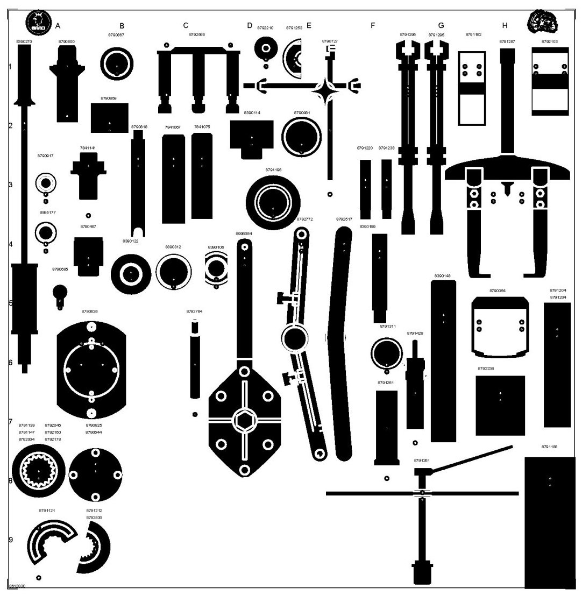
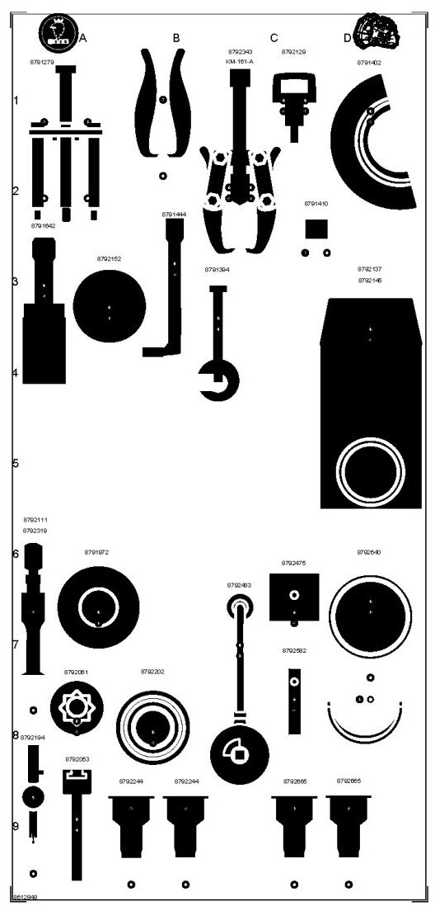

86 12 830 Toolboard T4 Manual Gearbox
86 12 830 Toolboard T4 Manual Gearbox

For manual gearbox. Board 1

For manual gearbox. Board 2
Group: Transmission
Tools on the full-size toolboard (86 12 830)
7841067 7841075 7841141 8390106 8390114 8390122 8390148 8390189 8390270 8390312 8790354 8790461 8790487 8790636 8790644 8790685 8790727 8790800 8790818 8790859 8790867 8791121 8791139 8791147 8791162 8791188 8791196 8791204 8791212 8791220 8791238 8791253 8791261 8791287 8791295 8791311 8791428 8792004 8792046 8792103 8792160 8792178 8792210 8792236 8792566 8792764 8792772 8792830
Tools on the half-size toolboard (86 12 848)
8791279 8791394 8791402 8791410 8791444 8791642 8791972 8792053 8792061 8792111 8792129 8792137 8792145 8792152 8792194 8792202 8792244 8792319 8792343(KM-161-A) 8792475 8792483 8792640 8792665 8792582